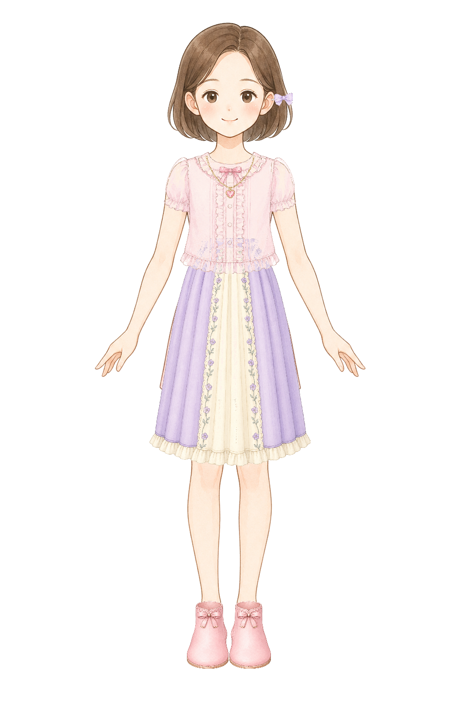
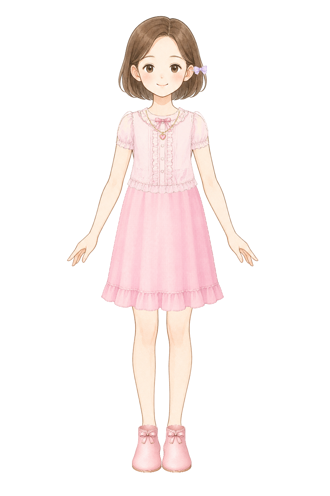

long-a
Long skirt A: top then bottom

Layer order: Top: simple frill blouse -> Bottom: long frill skirt -> Boots: left opaque -> Boots: right opaque -> Necklace: re-anchored baseline -> Hair accessory: side ribbon hairpin
DRESSUP ITEM FIT V15 LAYER STACK VALIDATION
../item-fit-v13-clothing/normalized/top-frill-blouse-fit.png../item-fit-v14-long-bottom/normalized/bottom-long-frill-skirt-fit.png../item-fit-v14-long-bottom/normalized/bottom-knee-a-line-fit.png../item-fit-v10-boots-alpha/normalized/boots-ribbon-ankle-stability-fit-left-opaque.png../item-fit-v10-boots-alpha/normalized/boots-ribbon-ankle-stability-fit-right-opaque.png../item-fit-v8-necklace-reanchor/normalized/necklace-inner-shoulder-line-fit-reanchored.png../item-fit-v12-hair-accessory-stability/normalized/hairpin-side-ribbon-stability-fit.pnglong-a
Layer order: Top: simple frill blouse -> Bottom: long frill skirt -> Boots: left opaque -> Boots: right opaque -> Necklace: re-anchored baseline -> Hair accessory: side ribbon hairpin
long-b

Layer order: Bottom: long frill skirt -> Top: simple frill blouse -> Boots: left opaque -> Boots: right opaque -> Necklace: re-anchored baseline -> Hair accessory: side ribbon hairpin
long-c

Layer order: Bottom: long frill skirt -> Top: simple frill blouse -> Necklace: re-anchored baseline -> Boots: left opaque -> Boots: right opaque -> Hair accessory: side ribbon hairpin
aline-a
Layer order: Top: simple frill blouse -> Bottom: knee A-line skirt -> Boots: left opaque -> Boots: right opaque -> Necklace: re-anchored baseline -> Hair accessory: side ribbon hairpin
aline-b

Layer order: Bottom: knee A-line skirt -> Top: simple frill blouse -> Boots: left opaque -> Boots: right opaque -> Necklace: re-anchored baseline -> Hair accessory: side ribbon hairpin
aline-c

Layer order: Bottom: knee A-line skirt -> Top: simple frill blouse -> Necklace: re-anchored baseline -> Boots: left opaque -> Boots: right opaque -> Hair accessory: side ribbon hairpin